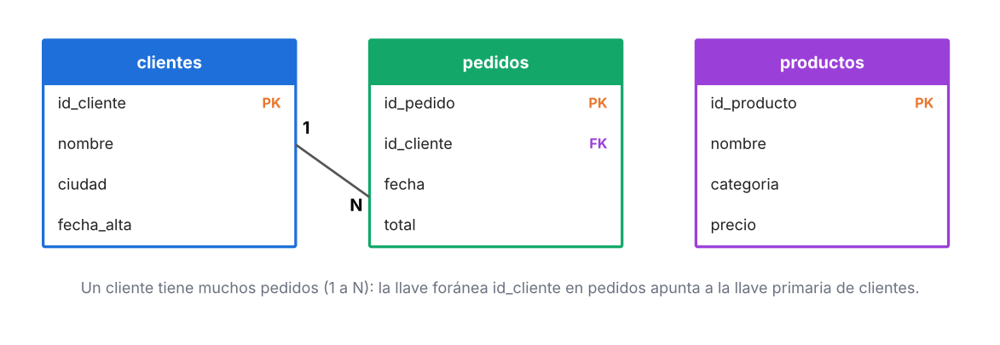
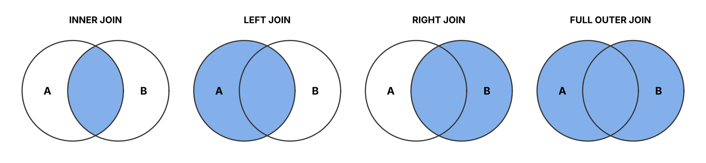

Las bases de datos son sistemas que permiten almacenar, organizar y administrar datos de forma estructurada para su posterior acceso, consulta, manipulación y análisis. Existen diferentes tipos de bases de datos, cada uno con características específicas para manejar distintos tipos de datos y requerimientos de aplicaciones.
1 Conceptos clave de bases de datos
- Datos: Información que puede ser almacenada y recuperada. Los datos pueden ser de diferentes tipos, como texto, números, imágenes, sonido, etc.
- Tabla: Estructura en la que se almacenan los datos en una base de datos relacional. Cada tabla tiene filas (registros) y columnas (atributos).
- Registro: Un conjunto de datos relacionados que forman una fila en una tabla.
- Atributo: Una característica o propiedad de un registro, que forma una columna en una tabla.
- Llave primaria: Un atributo o conjunto de atributos que identifican de forma única a un registro en una tabla.
- Llave foránea: Un atributo en una tabla que se refiere a la clave primaria de otra tabla, estableciendo una relación entre las dos.
2 Tipos de bases de datos
| Tipo | Cómo guarda los datos | Ejemplos | Cuándo usarla |
|---|---|---|---|
| Relacional (SQL) | Tablas con filas, columnas y relaciones | SQL Server, PostgreSQL, MySQL, Oracle | Transacciones, datos estructurados, reportes |
| Documentos | Documentos tipo JSON | MongoDB, Firestore | Datos con estructura variable (perfiles, catálogos) |
| Clave-valor | Pares llave → valor | Redis, DynamoDB | Caché, sesiones, lecturas muy rápidas |
| Columnar | Por columnas en lugar de filas | BigQuery, Snowflake, Redshift | Análisis sobre millones de registros |
| Grafos | Nodos y relaciones | Neo4j | Redes sociales, detección de fraude |
| Vectorial | Vectores numéricos (embeddings) | pgvector, Pinecone, Chroma | Búsqueda semántica y sistemas RAG con IA |
3 El modelo relacional
En una base relacional los datos se separan en tablas que se conectan mediante llaves. Así cada dato se guarda una sola vez y se evita repetir información.

Uno a uno (1:1)
Un empleado tiene un solo expediente.
Uno a muchos (1:N)
Un cliente tiene muchos pedidos. Es la relación más común.
Muchos a muchos (N:M)
Un pedido tiene muchos productos y un producto está en muchos pedidos. Se resuelve con una tabla intermedia.
4 SQL esencial para análisis
SQL (Structured Query Language) es el lenguaje para consultar bases relacionales. Estas cinco piezas resuelven la mayoría de las preguntas de negocio:
-- Ventas totales y ticket promedio por ciudad en 2025
SELECT c.ciudad,
COUNT(p.id_pedido) AS pedidos,
SUM(p.total) AS ventas,
AVG(p.total) AS ticket_promedio
FROM pedidos p
JOIN clientes c ON c.id_cliente = p.id_cliente
WHERE p.fecha BETWEEN '2025-01-01' AND '2025-12-31'
GROUP BY c.ciudad
HAVING SUM(p.total) > 100000
ORDER BY ventas DESC;| Cláusula | Para qué sirve |
|---|---|
SELECT | Elegir columnas o cálculos |
FROM / JOIN | Indicar las tablas y cómo se unen |
WHERE | Filtrar registros antes de agrupar |
GROUP BY | Agrupar para calcular totales, promedios o conteos |
HAVING | Filtrar después de agrupar |
ORDER BY | Ordenar el resultado |
Las funciones de ventana permiten cálculos sin perder el detalle, muy útiles en series de tiempo:
-- Media móvil de 7 días de las ventas por sucursal
SELECT sucursal, fecha, ventas,
AVG(ventas) OVER (PARTITION BY sucursal ORDER BY fecha
ROWS BETWEEN 6 PRECEDING AND CURRENT ROW) AS media_7d
FROM ventas_diarias;5 Tipos de JOIN

| JOIN | Devuelve | Ejemplo |
|---|---|---|
| INNER | Solo lo que coincide en ambas tablas | Clientes que sí compraron |
| LEFT | Todo A y lo que coincida de B | Todos los clientes, compren o no |
| RIGHT | Todo B y lo que coincida de A | Todos los pedidos, aunque el cliente ya no exista |
| FULL OUTER | Todo de ambas tablas | Conciliar dos sistemas |
6 Normalización
Es el proceso de organizar las tablas para evitar datos repetidos e inconsistentes.
1FN
Cada celda guarda un solo valor; nada de listas dentro de una columna.
2FN
Cada columna depende de toda la llave primaria, no solo de una parte.
3FN
Ninguna columna depende de otra columna que no sea la llave.
Para análisis a veces se hace lo contrario (desnormalizar): se juntan tablas en una sola más ancha para que los reportes sean rápidos.
7 OLTP vs. OLAP
| OLTP (operación) | OLAP (análisis) | |
|---|---|---|
| Propósito | Registrar ventas, pagos, inventarios en tiempo real | Analizar históricos y generar reportes |
| Consultas | Muchas, pequeñas y rápidas | Pocas, grandes y complejas |
| Diseño | Normalizado | Esquema estrella: tabla de hechos + dimensiones |
| Ejemplo | Sistema de punto de venta | Data warehouse que alimenta Power BI |
El proceso que mueve los datos de un mundo al otro es el ETL: extraer, transformar (limpiar, homologar formatos) y cargar.
8 Buenas prácticas para ciencia de datos
- Entender qué representa cada fila (el grano de la tabla) antes de consultar.
- Filtrar y agregar en la base de datos, no traer millones de filas a Python.
- Revisar nulos, duplicados y formatos de fecha antes de unir tablas.
- Usar índices en las columnas por las que más se filtra o se une.
- Documentar un diccionario de datos con el significado de cada columna.
- Nunca guardar contraseñas en el código; usar variables de entorno.
 Conocimiento
Conocimiento